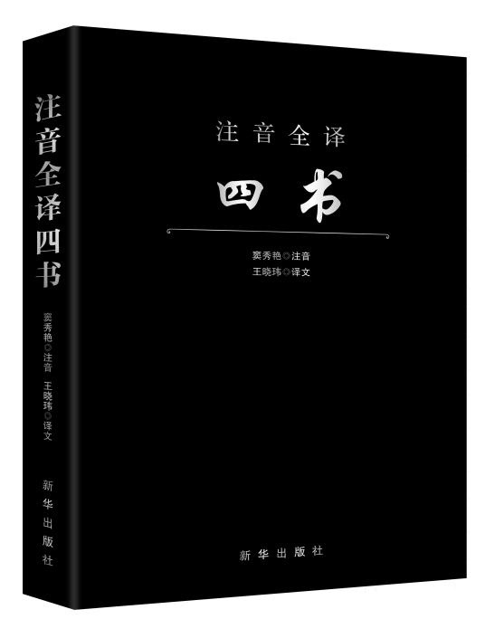

四书五经
优秀的国家瑰宝

四书五经，是指“四书”与“五经”的合称，是历代儒客学子研学的核心书经，在中国的传统文化的诸多文学作品当中，四书五经占据着相当重要的位置。四书五经详细的记载了我国早期思想文化发展史上政治、军事、外交、文化等各个方面的史实资料以及孔孟等思想家的重要思想
《四书名单:《大学》、《中庸》、《论语》、《孟子》四部作品。
五经名单:《诗经》、《尚书》、《礼记》、《周易》、《春秋》五部作品。
《春秋》由于文字过于简略，通常分别与解释《春秋》的《左传》《公羊传》《谷梁传》合刊。四书之名始于宋朝，五经之名始于汉武帝